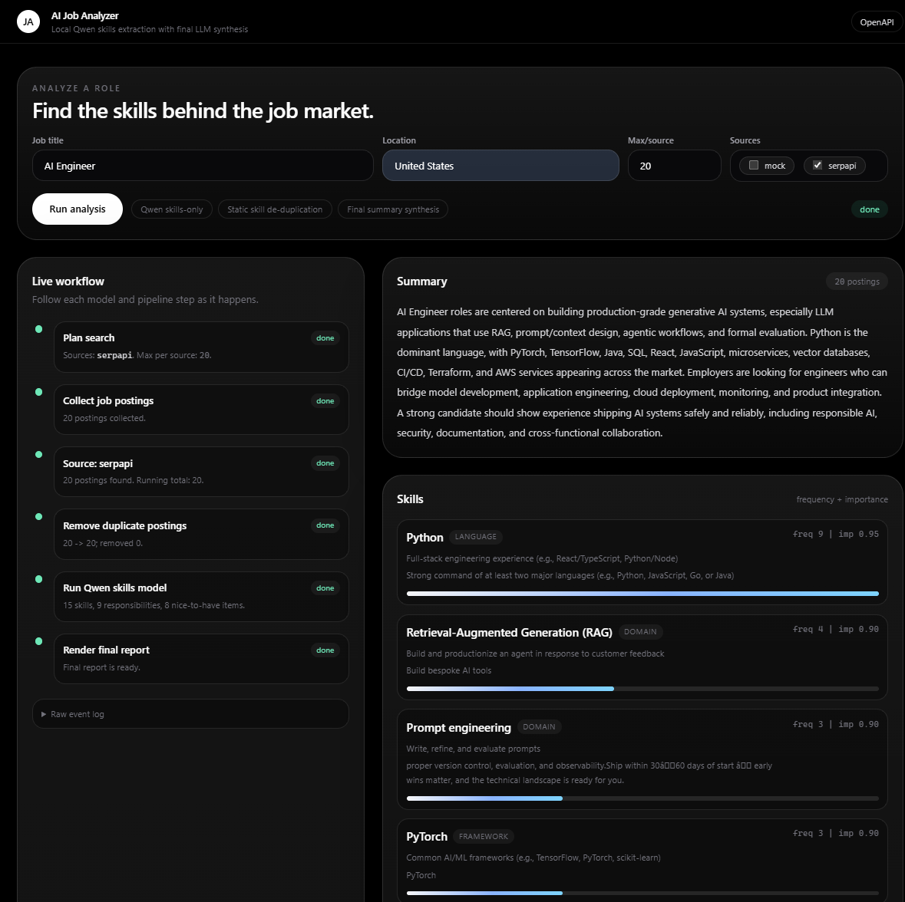

An evaluation-driven LLM application that turns job postings into a clean skill intelligence report using a locally fine-tuned Qwen adapter, deterministic skill canonicalization, and a cloud finalizer for polished summaries.

The goal was not just to call a frontier model. I wanted to prove whether a small local model could handle the high-volume part of the workflow: extracting concrete, portfolio-verifiable skills from raw job descriptions.
I built the full loop: scrape real postings, generate teacher labels, train QLoRA adapters, evaluate against GPT-5-mini and base Qwen, then wire the best adapter back into a working FastAPI application with a clean web UI.
Collected SerpApi job postings and generated structured OpenAI teacher labels for top skills, responsibilities, nice-to-have items, evidence, and summaries, creating a domain dataset for Qwen fine-tuning.
Trained Qwen3-1.7B adapters and changed the objective after a strict smoke test showed that full JSON report generation was too heavy for the small model. The final adapter focuses on skills-only extraction for better reliability.
Added deterministic skill de-duplication before optional LLM cleanup so variants such as framework names, provider names, and spelling differences map to stable labels across training data and predictions.
Built a repeatable evaluation harness and HTML report generator comparing base Qwen, GPT-5-mini, compact QLoRA, and skills-only QLoRA using the same held-out test split and unified semantic skill matching.